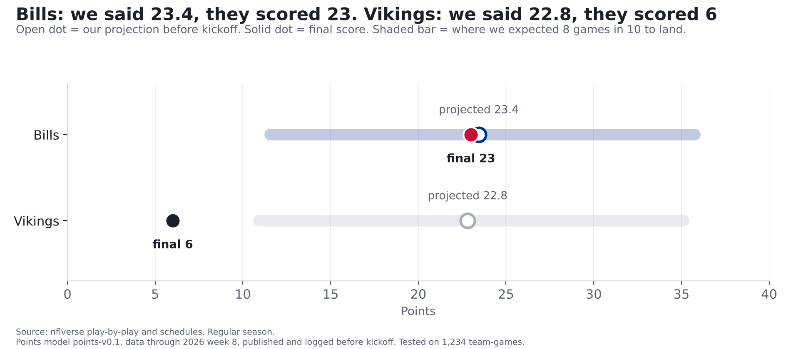
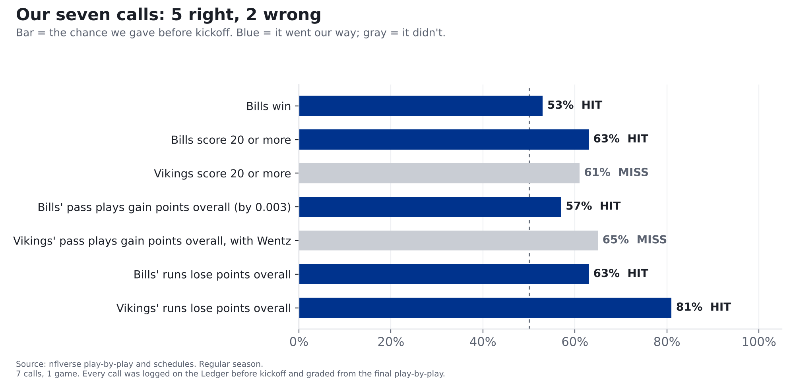

Bills 23, Vikings 6: we nailed Buffalo's half and missed Minnesota's
We projected the Bills for 23.4. They scored 23. We projected the Vikings for 22.8. They scored 6. Five of our seven calls hit; here's every one, graded.
We projected the Bills to score 23.4. They scored 23. We projected the Vikings to score 22.8. They scored 6: teams fell that far short of our projection only about 3 times in 100 when we checked the model against past games. Of the seven calls we logged before kickoff, 5 hit, including the one that matters most: the Bills win. Both misses came mostly from Minnesota's passing game, which had one of the worst nights of any team this season.
Bills at Vikings, Monday Night Football, Nov. 9. Our prediction ran Monday morning (our preview) and every call was logged on the Ledger before kickoff. Here's how they did.

What "gaining points" means. Every snap starts from a spot on the field where an average NFL offense can expect a certain number of points from the drive. A good play raises that number and a bad one lowers it. Before Dorian Williams's interception in the third quarter, Minnesota could expect about 4.1 points from that drive. After it, Buffalo had the ball and could expect about 0.15. That one throw cost the Vikings about 4.2 points. Add up every pass play and you get whether a team's passing helped or hurt it. Minnesota's cost it about 26. That doesn't mean 26 points came off the scoreboard. It means their passing turned drives that should have produced points into drives that produced almost nothing.
Minnesota: what we missed
With Kyler Murray out, Carson Wentz started. He went 8 of 24 for 81 yards, threw 2 interceptions (Dorian Williams and Terrel Bernard) and was sacked once before Max Brosmer took over late with the game decided. As a team, Minnesota's pass plays (which include sacks and quarterback scrambles) cost it about 26 points over 33 pass plays: play for play, the 3rd-worst passing night of any team this season (out of 272 team performances). The Vikings turned it over 3 times and turned it over on downs 2 more, on their way to 6 points.
Why our Vikings calls missed. Our model had Minnesota around 23 points, built mostly on Kyler Murray's games and last season. We expected their score to land between 11 and 35 eight times in 10. Six was below that. When we ran the model back over past games, only about 3 teams in 100 fell that far short. And the pass call (65%) was built on the one piece we told you we hadn't tested: swapping in Wentz's own numbers. One game can't tell us whether that swap is wrong. It does tell us not to use it on the Ledger again until we've tested it, so we won't.
Buffalo: right on the number
The Bills scored 23 on 13 drives, about 1.8 points a drive, less than the 2.2 our model expected, but over more drives than the 11 it planned on. It came out to almost exactly the projection.
Our preview said this was the best offense in football against the best defense at stopping it, and that the two would mostly cancel out. That's what happened: Josh Allen went 21 of 31 for 234 yards with 1 interception and was sacked 4 times, and Buffalo's pass plays finished almost exactly even. The run game did the steady work: 39 runs (not counting Allen scrambles) for 132 yards.
The scorecard
| Call | Our chance | What happened | Result |
|---|---|---|---|
| Bills win | 53% | Bills 23, Vikings 6 | Hit |
| Bills score 20 or more | 63% | Bills 23 | Hit |
| Vikings score 20 or more | 61% | Vikings 6 | Miss |
| Bills' pass plays gain points overall | 57% | Gained 0.003 points over 36 pass plays: basically zero | Hit |
| Vikings' pass plays gain points overall, with Wentz | 65% | Lost about 26 points over 33 pass plays | Miss |
| Bills' runs lose points overall | 63% | Lost about 3 points over 39 runs | Hit |
| Vikings' runs lose points overall | 81% | Lost about 2 points over 11 runs | Hit |
How we grade. A call is a hit when the side we gave 50% or more happens. We also score every call by how far our chance was from what happened, squared, so a confident miss costs more than a timid one. This week our calls scored 0.22. Guessing 50/50 on every call would score 0.25. Lower is better. Across all 8 calls on the Ledger so far, including Sunday's Sabres call, we're 6 for 8 with a score of 0.22. Eight calls is a small record. That's why we keep it: it grows every week.
Why "runs lose points" is the expected outcome. Across the league this season, the average run costs the offense about 0.08 points, and 67% of teams' games end with their runs below zero. Losing a little on the ground is normal. Running well is the exception.
One hit we're not bragging about. The Bills' pass plays had to gain points overall for that call to hit. Over 36 pass plays they gained 0.003 points, about as close to zero as it gets. By the rule we set before kickoff, that's a hit. If it had landed 0.003 the other way, we'd have logged a miss. Fairly, it was a coin landing on its edge. The same goes for the win call in the other direction: at 53%, we called it close to a coin flip, and a 17-point win doesn't make it a bold call after the fact.
What it means
- A known weak spot, closed for a night. Earlier this season we said throws of under 20 yards downfield were where the Bills defense was most beatable. Monday, Minnesota's 25 throws of under 20 yards cost it 16 points. One game doesn't erase seven, and it doesn't make that weak spot go away. But it was the second straight strong night: Baltimore scored 10 points on 13 drives in week 8, Minnesota 6 on 12. Buffalo now allows about 2.1 points a drive, right around the league average of 2.05 (25th in the league before Monday, 16th now). Two games is a small sample, and Minnesota's quarterback situation helped.
- What we're changing. No more untested quarterback swaps on the Ledger.
- Next: the Bills play at the Jets on Sunday, Nov. 15, with our predictions logged before kickoff.
For the stat-heads

- Points model points-v0.1, inputs pinned to 2026 week 8 (as published). Projections BUF 23.44, MIN 22.81; 80% ranges from training residuals. MIN residual -16.8; share of residuals at or below it: training 0.034, out of sample (2024-26, n=1234) 0.032.
- "Points gained" is nflverse expected points added (EPA). Example play 2455: EP 4.06 before, EPA -4.21.
- Grades: P0002-P0004 from raw_schedules; P0005-P0008 from clean_team_week (model_v01.game_values, offense side), the same definitions the models used. BUF EPA/dropback +0.000 (+0.0029 total over 36). Brier this week 0.2158; all graded calls 0.2152 (n=8).
- League EPA per designed run, 2026 weeks 1-9: -0.080 (n=6,622 runs, 272 team-games).
- MIN EPA per dropback ranks 3 of 272 2026 team-games (1 = worst). "Under 20 yards downfield" = pass attempts with air yards under 20.
- BUF points allowed per drive, regular season through week 8: 2.351 (25 of 32); through week 9: 2.101 (16 of 32).
- Minnesota's team passing numbers include 8 dropbacks by Max Brosmer. Wentz: 25 dropbacks. An aborted snap that Minnesota lost counts as neither a pass play nor a designed run in these numbers. Murray injury: Kevin O'Connell, Nov. 5 (ESPN), as cited in our preview.
- Hit rule: the side given 50% or more happens (
ledger.summary). - FTN charting (blitz counts) for this game wasn't published yet when we ran this, so the blitz angle isn't graded here.